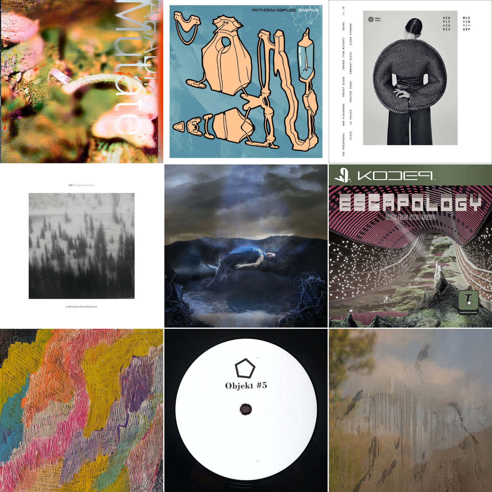

--- welcome to longking's blog ---
home
project
about
All the image textures are all from
unsplash
©

Right, wrong... Nobody's got a clue what the difference is in this town. So I'm gonna have more fun... and live crazier than any of 'em.
Goro Majima